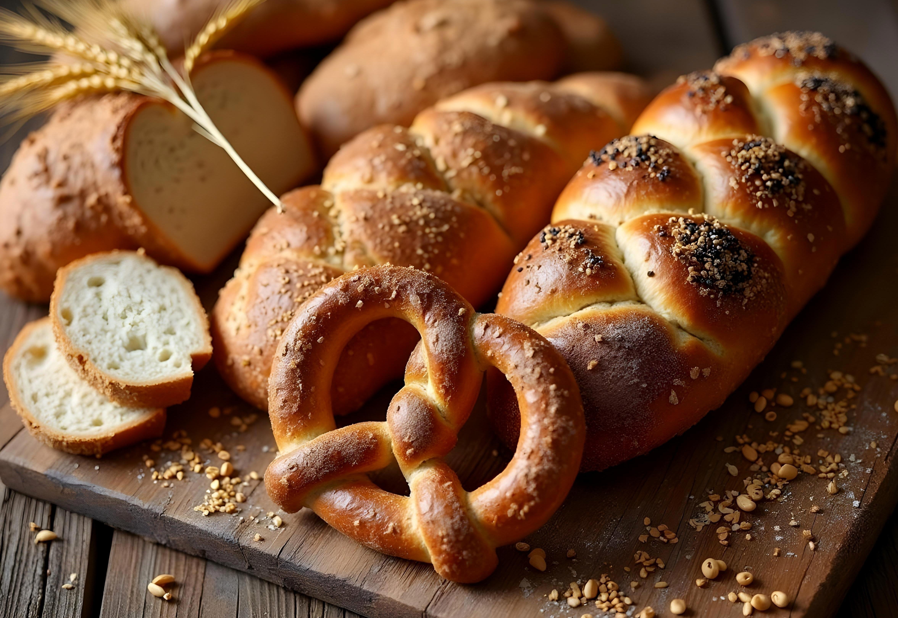
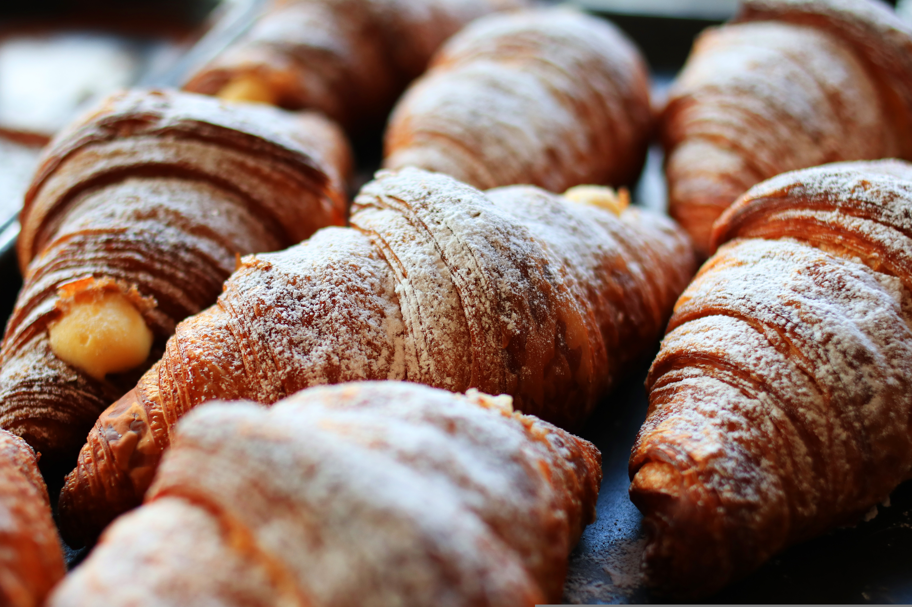
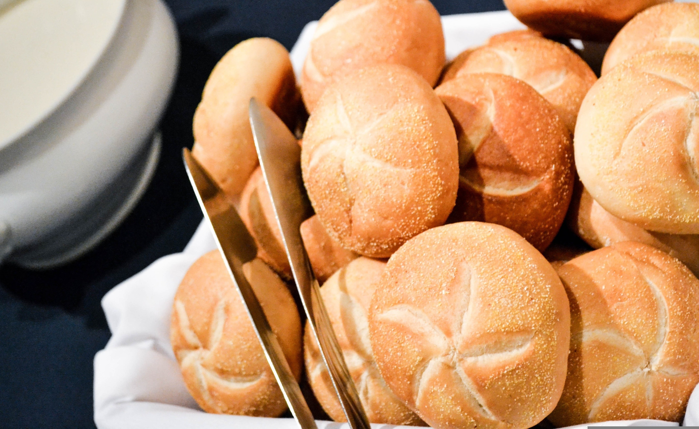
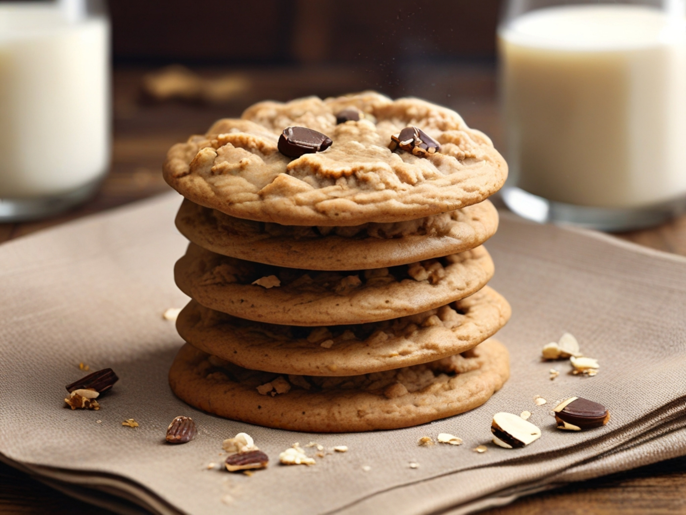
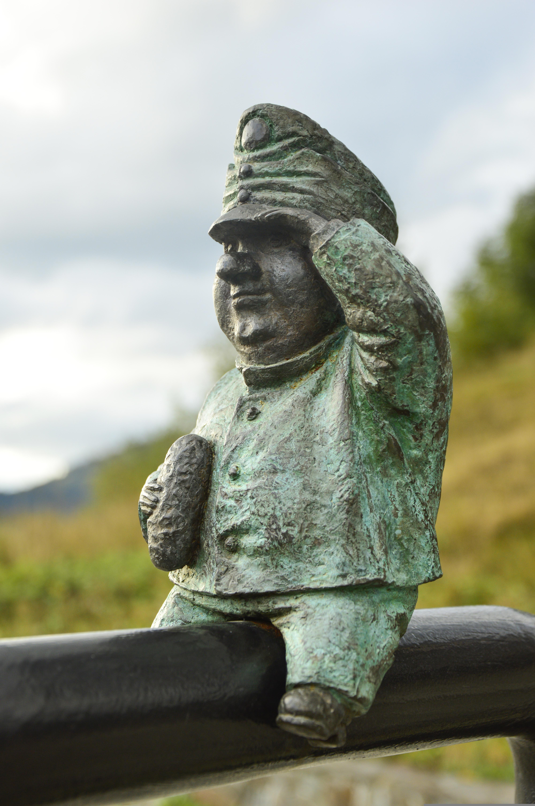
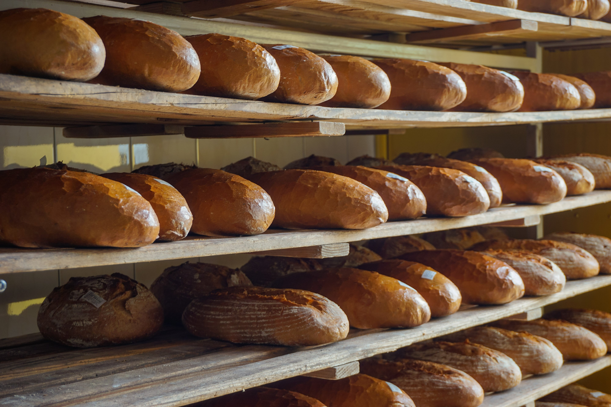
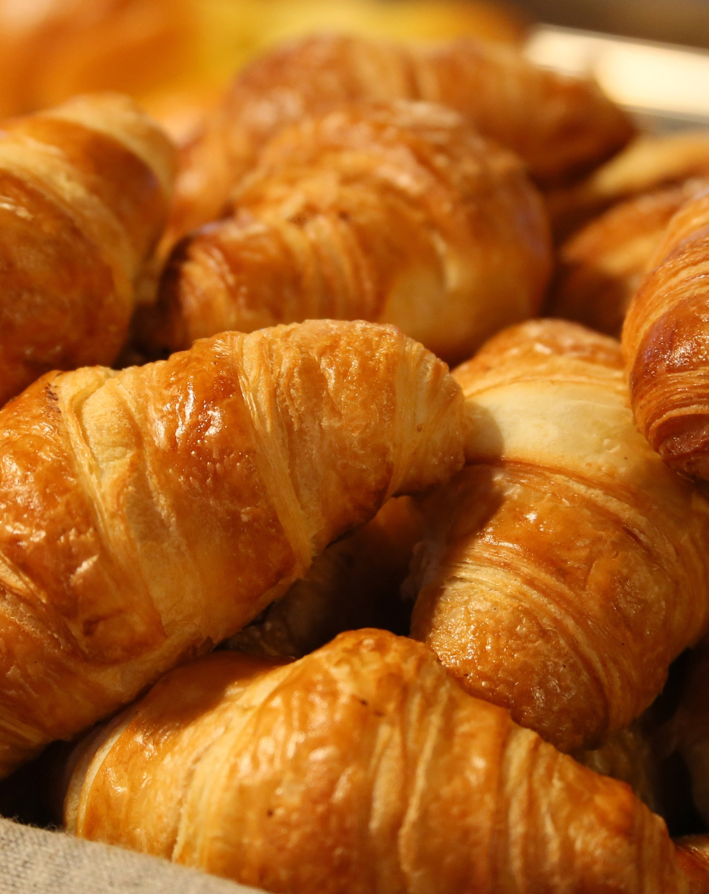
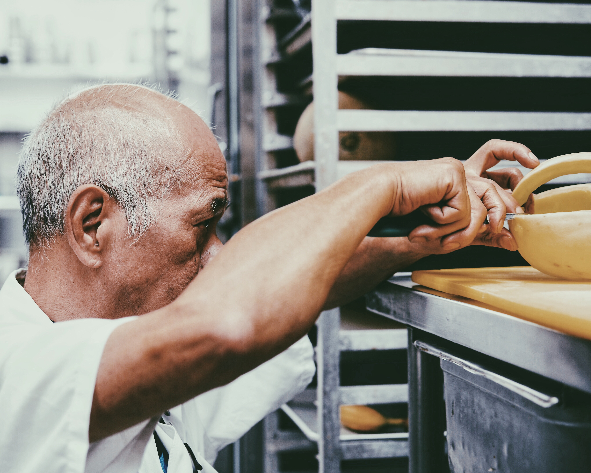
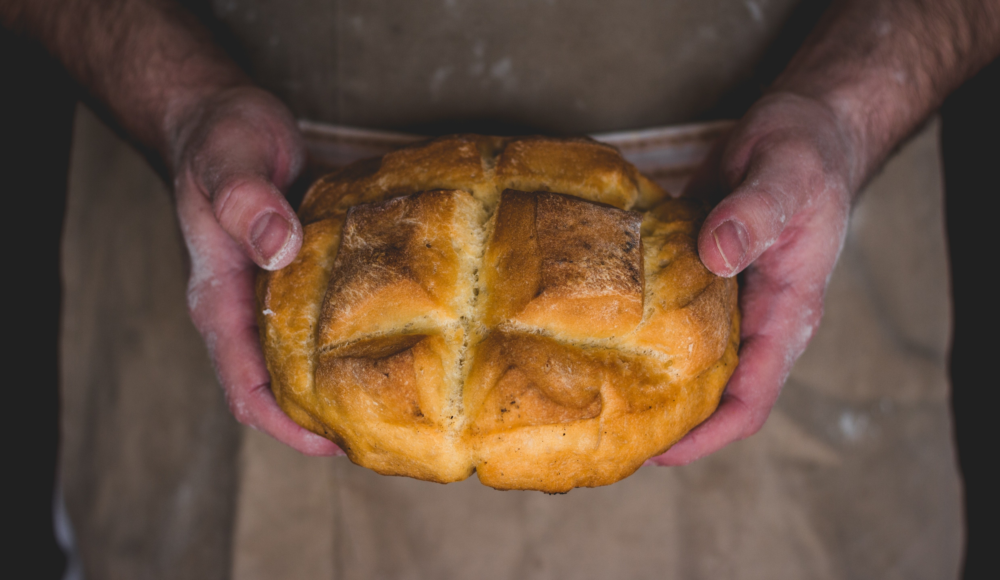

Hecho con las manos.
El obrador, nuestros productos y el cuidado que ponemos en cada detalle.
Panadería de Marco
Una tradición que se ve y se saborea.
Una pequeña ventana a lo que hacemos cada día.








